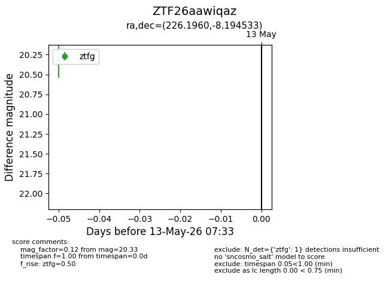
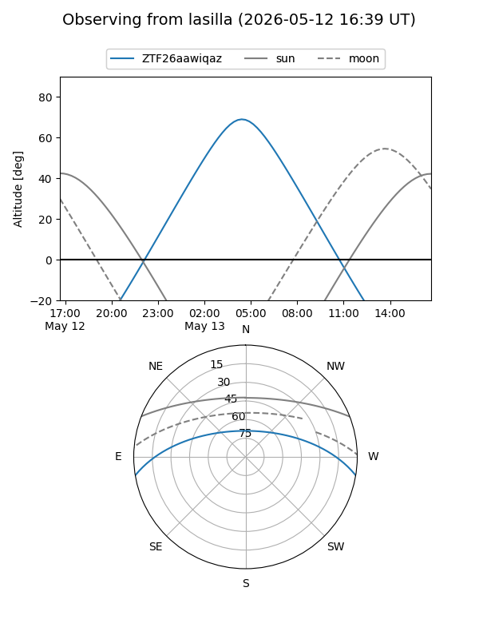
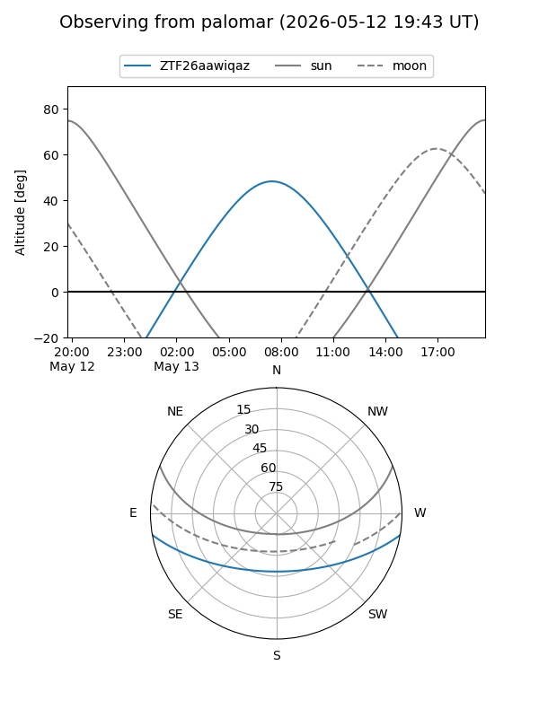

ZTF26aawiqaz
Target ZTF26aawiqaz at 2026-05-13 07:35
Aliases and brokers:
FINK: link
Lasair: link
ALeRCE: link
alt names
ZTF26aawiqaz (ztf,fink_ztf)
Coordinates:
equatorial (ra, dec) = 226.1960,-8.19453
equatorial (HMS+DMS) = 15:04:47.04,-08:11:40.32
galactic (l, b) = (350.1194,+42.14133)
Flags:
Photometry:
last ztfg=20.33
1 ztfg detections
Lightcurve

Visibility


Additional plots